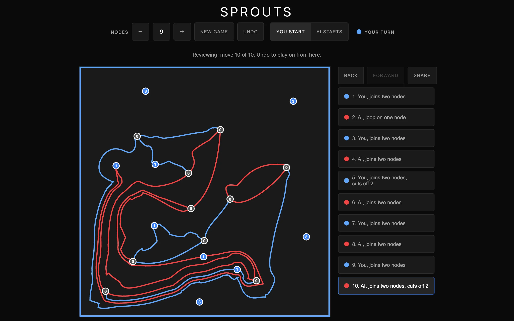

Sprouts is a pen-and-paper game that John Conway and Michael Paterson invented at Cambridge in 1967. You start with \(n\) dots, called spots. A move draws a curve from one spot to another, or from a spot back to itself, without crossing any existing line, and then puts a new spot somewhere on that curve. No spot may have more than three lines touching it. Whoever makes the last legal move wins. I wanted to play it against a computer.
The position without the drawing
The first version of this treated the board as a picture. It rasterized the lines, thinned the free space to a skeleton, and pathfound along that, and legality was a pixel test. It was slow and wrong in both directions. At one point it declared a game over with a legal move still on the board.
The rewrite keeps the drawing out of the rules. A position is a rotation system: each spot lists its lines in counterclockwise order, and that alone determines the faces, which is everything Sprouts cares about.
The search
Sprouts is an impartial game, so every position has a nimber, and a position made of independent parts has the XOR of its parts' nimbers. The player to move loses exactly when that sum is zero. A move changes one face, but a spot with two lines has a corner in each face beside it, so faces that share a live spot are one game. The faces linked that way are the regions, and each is solved on its own.
Who wins is a different question. Applegate, Jacobson, and Sleator computed it by exhaustive search up to 11 spots in 1991 and conjectured that the first player wins exactly when \(n \bmod 6\) is 3, 4, or 5. Lemoine and Viennot carried the pattern to 44 spots by computing nimbers, one value for each independent part of the board instead of one search over the whole thing. Nobody has proved it in general. The AI here does the same thing on smaller boards.
When every region is small enough to solve within a budget, about a quarter of a second, the AI plays a move that leaves a zero sum, or when there isn't one, the move that leaves the opponent the most room. Six fresh spots have 18 lives between them and are already too much to solve from cold, so bigger positions go to an alpha-beta search with iterative deepening under an 800 ms clock.
Drawing the move
The search picks a move in the model, and then it has to be drawn. Lines keep a clearance from other lines and from spots so the board stays readable and later moves have somewhere to go. The router erodes the face by those clearances, pushing every wall inward and cutting a disc around every spot except the move's two ends, and triangulates what's left with a constrained Delaunay triangulation. Any path through the free triangles keeps the clearances by construction, and if the two ends are in different pieces of the eroded face, there is no room.
Everything in this pipeline is sums, products, and square roots, no trig and no hypot, because the WebAssembly build has to draw the same curve bit for bit as the native one or a shared game comes out different on the other end.